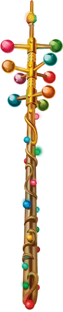

Волшебная палочка чудес
Wand of Wonder
Волшебная палочка, редкая (требуется настройка)

Рекомендованная стоимость 4 000 ЗМ
Эта палочка имеет 7 зарядов. Пока вы держите её в руке, вы можете действием Магия потратить 1 заряд и выбрать точку в пределах 120 футов от вас. Эта точка будет исходной точкой заклинания или иного магического эффекта; каким именно будет эффект, определяет бросок по таблице «Эффекты Волшебной палочки чудес». Если это заклинание, Сл спасброска равна 15. Если обычно максимальная дистанция заклинания меньше 120 футов, то при сотворении с помощью этой волшебной палочки она становится равна 120 футам. Если эффект может воздействовать сразу на несколько целей, Мастер определяет случайным образом, на какие цели эффект воздействует.
Восстановление зарядов. Волшебная палочка восстанавливает 1к6 + 1 потраченных зарядов на каждом рассвете. Если вы тратите последний заряд палочки, бросьте к20; если выпадет 1, палочка уничтожается и рассыпается в прах.
Эффекты Волшебной палочки чудес
| 1к100 | Эффект |
| 01–20 | Вы сотворяете заклинание, исходящее из выбранной точки. Бросьте 1к10, чтобы определить, какое заклинание сотворяется: это Тьма при результатах 1-2, Огонь фей при 3-4, Огненный шар при 5-6, Замедление при 7-8, Зловонное облако при 9-10. |
| 21–25 | В выбранной точке ничего не происходит, но вы получаете состояние Ошеломлённый до начала вашего следующего хода; в это время вы уверены, что только что случилось нечто восхитительное. |
| 26–30 | Вы сотворяете Порыв ветра. Линия воздействия исходит от вас к выбранной точке. |
| 31–35 | В выбранной точке ничего не происходит, но вы получаете 1к6 Психического урона. |
| 36–40 | Сильный дождь идёт в течение 1 минуты в области Цилиндра высотой 120 футов и радиусом 60 футов с центром в выбранной точке. Во время действия эффекта эта область Слабо заслонена. |
| 41–45 | Облако из 600 огромных бабочек заполняет Цилиндр выстой 60 футов и радиусом 30 футов с центром в выбранной точке. Бабочки существуют 10 минут; в течение этого времени область Цилиндра Сильно заслонена. |
| 46–50 | Вы сотворяете Молнию. Линия воздействия исходит от вас к выбранной точке. |
| 51–55 | Ближайшее к выбранной точке существо увеличивается, как если бы вы сотворили на него Увеличение/уменьшение. Если цель не вы и не может быть увеличена этим заклинанием, вместо этого существа целью заклинания становитесь вы. |
| 56–60 | Созданное магическим образом существо появляется в ближайшем к выбранной точке незанятом пространстве. Существо не управляется вами; оно действует, как и обычно, и исчезает через 1 час или когда его Хиты падают до 0. Бросьте 1к4, чтобы определить, какое существо появляется: это Носорог при результате 1, Слон при 2 и Крыса при 3-4. |
| 61–64 | На земле, в области круга радиусом 60 футов с центром в точке, ближайшей к выбранной, вырастает трава. Уже находящаяся в этой области трава вырастает в 10 раз и остаётся такой в течение 1 минуты. |
| 65–68 | Объект по выбору Мастера исчезает, отправляясь на Эфирный план. Выбранный объект должен находиться в пределах 120 футов от выбранной точки, не быть несомым или носимым, и иметь не больше 10 футов в каждом измерении. Если таковых объектов в означенных пределах нет, ничего не происходит. |
| 69–72 | В выбранной точке ничего не происходит, но вы уменьшаетесь, как если бы вы сотворили на себя Увеличение/уменьшение, на 1 минуту. |
| 73–77 | На ближайшем к выбранной точке существе вырастают листья. Если их не срывать, они буреют, а через 24 часа отваливаются. |
| 78–82 | В выбранной точке ничего не происходит, но от вас 30-футовой Эманацией исходит вспышка разноцветного яркого света. Каждое существо в этой области должно преуспеть в спасброске Телосложения Сл 15, иначе получит состояние Ослеплённый на 1 минуту, повторяя спасбросок в конце каждого своего хода и оканчивая на себе этот эффект при успехе. |
| 83–87 | В выбранной точке ничего не происходит, но вы сотворяете на себя Невидимость. |
| 88–92 | В выбранной точке ничего не происходит, но поток самоцветов вылетает из кончика волшебной палочки Линией длиной 30 футов и шириной 5 футов по направлению к выбранной точке. Количество самоцветов равно 1к4 × 10; каждый самоцвет наносит 1 Дробящего урона, и суммарный урон равномерно разделяется по всем существам в Линии. |
| 93–97 | Вы сотворяете Превращение, нацеливаясь на ближайшее к выбранной точке существо. Бросьте 1к4, чтобы определить, в форму какого Зверя обратится цель: это Чёрный медведь при результате 1, Гигантская оса при 2 и Лягушка при 3-4. |
| 98–00 | Ближайшее к выбраннной точке существо совершает спасбросок Телосложения Сл 15. При провале оно получает состояние Опутанный и начинает обращаться в камень. Опутанное этим эффектом существо повторяет этот спасбросок в конце своего следующего хода; при успехе эффект оканчивается, а при провале оно вместо состояния Опутанный получает состояние Окаменевший, длящееся пока не будет снято Высшим восстановлением или аналогичной магией. |